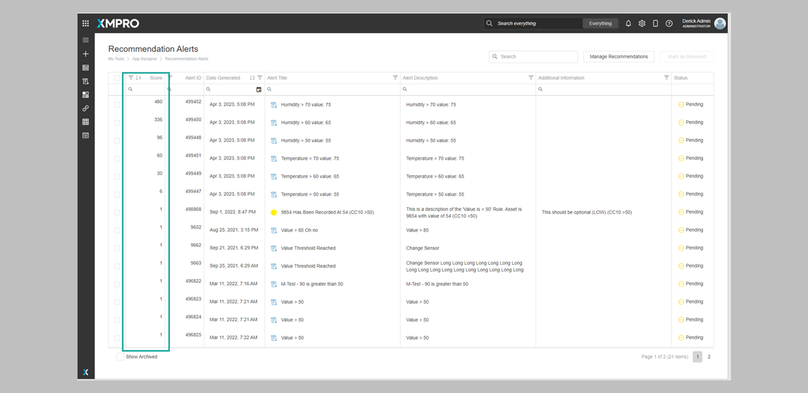
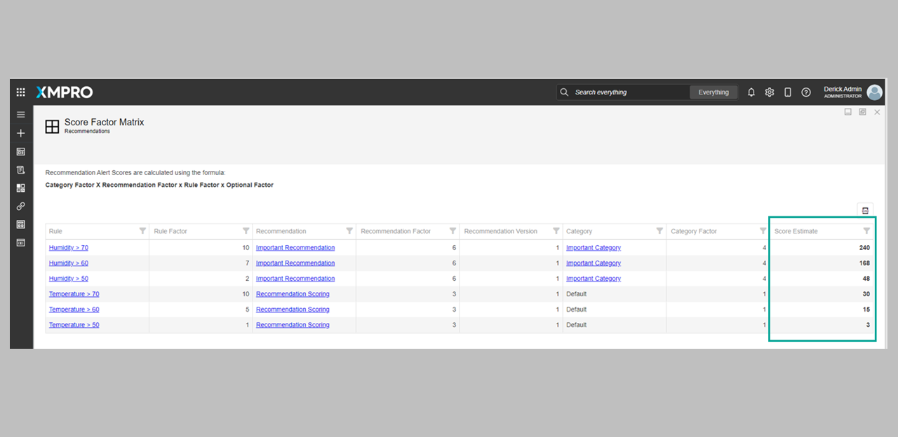
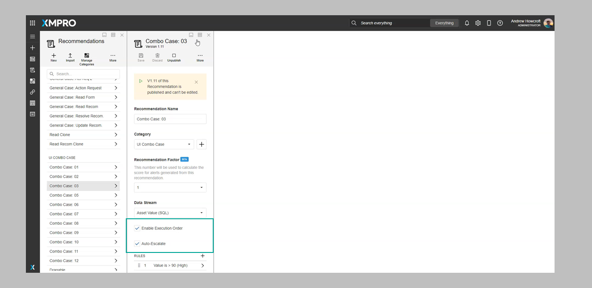
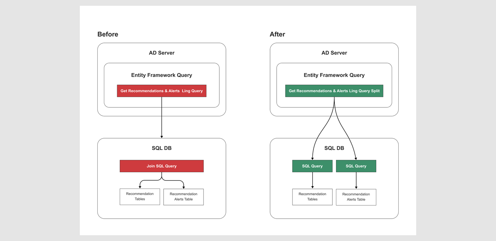
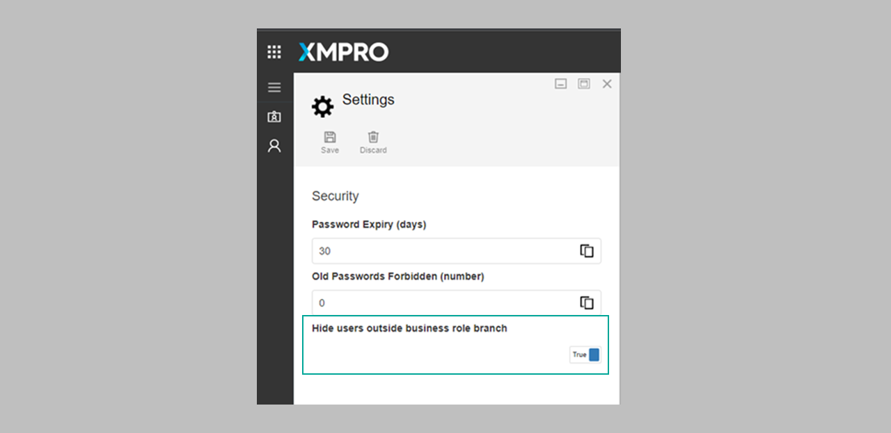
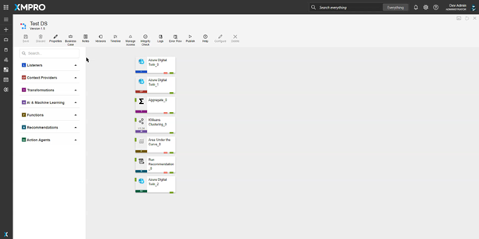

What's New in 4.2
Overview
This page shows a curated selection of features we've released in XMPro version 4.2. For more details on what's in the latest version, please read the Release Notes.
Application Designer
Recommendation and Alert Scoring
When setting up a Recommendation, authors are now able to fine-tune the Alert Recommendation priority by changing its score. By contrast, Alert Ranking only has options for High, Medium, and Low.
Alert Scores are calculated based on these factors:
- Recommendation - The importance of the recommendation itself
- Recommendation Category - The importance of the recommendation's category
- Recommendation Rule - The importance of the specific rule
- Recommendation Optional- Additional Rule Factor value retrieved from the Data Stream.
As a recommendation creator, assigning a score to an alert lets you control its importance level more precisely. This Score helps the alert recipient to understand its relative importance.
Viewing the Alerts
You can view the order of alerts in the Recommendation Alerts list.

You can also view the Scores using the Score Factor Matrix. Follow the steps mentioned here.

Auto-Assigning of an Escalated Recommendation Alert
This enhancement automatically assigns an escalated recommendation alert to the previous owner of the original alert.
To use this, simply check "enable execution order" and "auto-escalate" with the specified rules.

You can view this as a timeline entry that creates an audit trail.
Query Optimization for AD
Experience faster performance and quicker AD queries through optimized Entity Framework settings for database queries.

Subscription Manager
New Permission - Hide Users Outside of Business Roles
This new permission prevents users' information from being exposed to users who are not in the same business role group or any of the parent business role groups, enhancing privacy and security.

Data Stream Designer
Agent Category Visual Indicator
Introduced color palettes as visual cues for agent categories. As a user, you can now quickly distinguish between listeners, context providers, transformations, etc.

Last modified: May 13, 2025